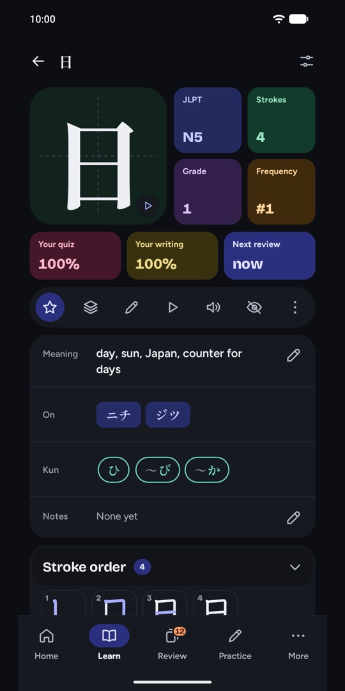
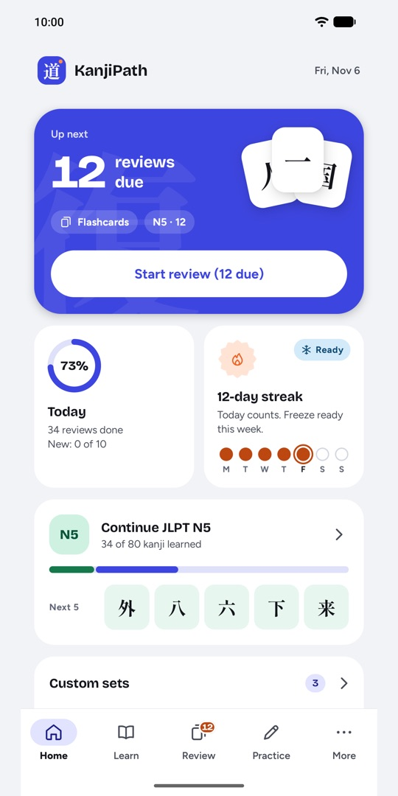
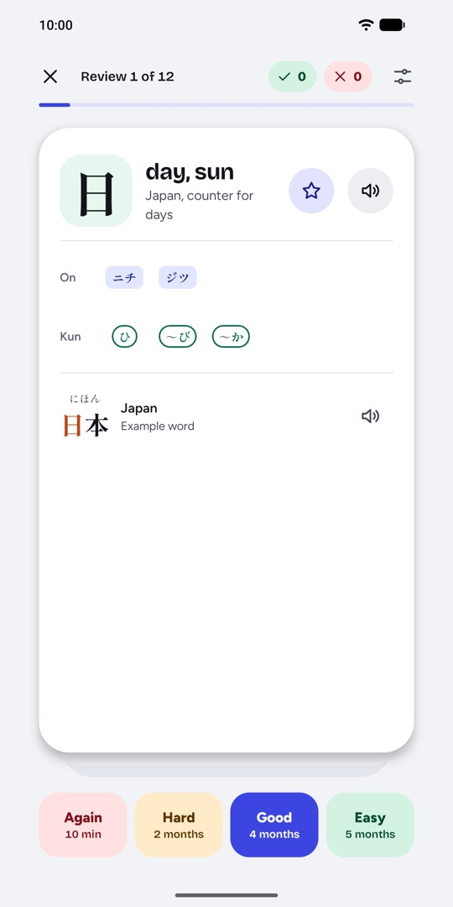
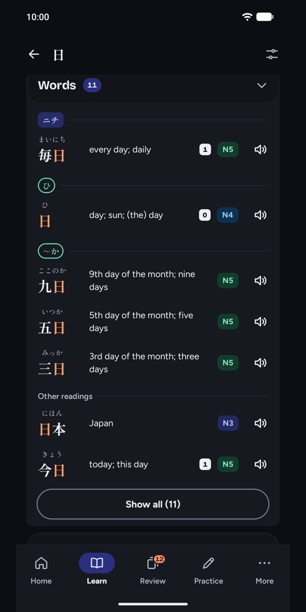
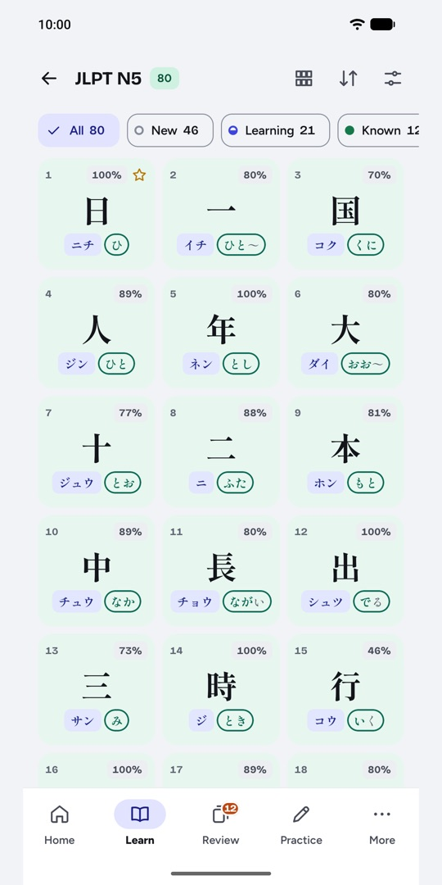

Learn kanji for the JLPT, stroke by stroke.
An Android app that takes you from kana to JLPT N1: meanings, readings and real example sentences, stroke-order animation, handwriting practice with feedback on every stroke, and reviews that bring each kanji back just before you would forget it.





What you get
Learn each kanji properly
Meanings, on and kun readings, example words grouped under the reading they use, what each kanji is made of, look-alike kanji, and real sentences with furigana. Hear readings, words and sentences in Japanese.
Write it yourself
Watch the stroke order, then write with your finger or a stylus. Every stroke is checked for direction, order and position, so you learn to write 日 the way it is really written.
Remember it
Spaced-repetition reviews with flashcards, typed answers and multiple choice. Leeches and look-alike warnings help with the kanji you keep missing.
Prepare for the JLPT
Study by level, N5 to N1, and take timed kanji mock tests with a score for each section.
Find any kanji
Search by meaning, reading (kana or romaji) or the kanji itself. Filter by level, stroke count and parts, or draw it.
Private and offline
Your progress stays on your phone. No account, no ads, no tracking. Back it up to a file whenever you like.
Free, and one payment for the rest
Free forever
No time limitNo account, no ads.
- Hiragana, katakana and the 214 radicals
- All JLPT N5 kanji, with their words, sentences and audio
- Lessons, reviews and handwriting practice
KanjiPath Full
One paymentBought in Google Play. No subscription.
- N4 to N1: more than 2,000 more kanji
- Custom sets of your own kanji
- Write a whole kanji from memory and have it recognised
- Full mock tests
Questions
Start with your first kanji today
Free on Google Play for Android 7.0 and newer.